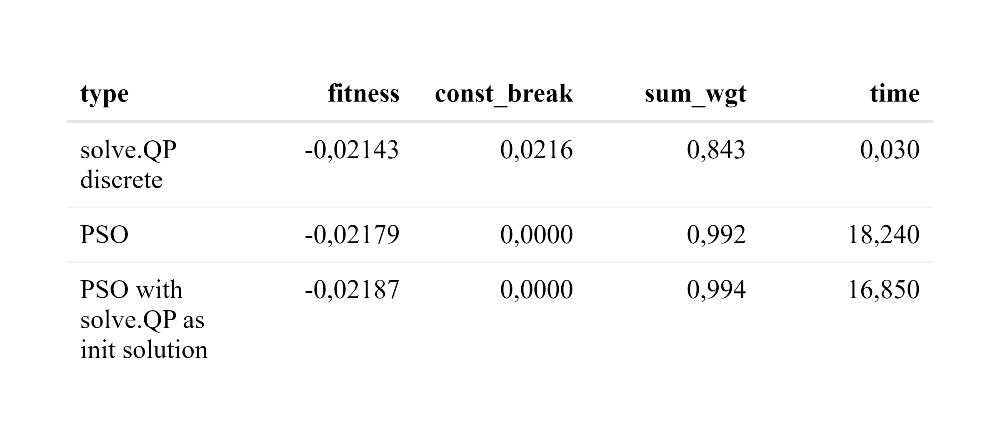

Chapter 7 Particle Swarm Optimization (PSO)
The PSO was developed by J. Kennedy as a global optimization method based on swarm intelligence and presented to the public in 1995 by Eberhart and Kennedy (James Kennedy 1995). The original PSO was intended to resemble a flock of birds flying through the sky without collisions. Therefore, its first applications were found in particle physics to analyze moving particles in high-dimensional spaces, which the name Particle recalls. Later, it was adapted in Evolutionary Computation to exploit a set of potential solutions in high dimensions and to find the optima by cooperating with other particles in the swarm (Konstantinos Parsopoulos 2002). Since it does not require gradient information, it is easier to apply than other global optimization methods. It can find the optimum by considering only the result of the function to be optimized. This means that the function can be arbitrarily complex and it is still possible to reach the global optimum. Other advantages are the low computational costs, since only basic mathematical operators are used,the extensibility and the simplicity.
7.1 The Algorithm
Each particle \(d\) with position \(x_d\) moves in the search space \(\mathbb{R}^N\) and has its own velocity \(v_d\) and remembers its previous best position \(P_d\). After each iteration, the velocity changes in the direction of the intrinsic velocity, the best previous position, and the global best position \(p_g\) of all particles. A position change from \(i\) to \(i+1\) can be calculated by the following two equations (Konstantinos Parsopoulos 2002): \[\begin{align*} v_d^{i+1} &= wv_d^{i} + c_p r_1^{i(d)} (P_d^i - x_d^i) + c_g r_2^{i(d)} (p_g^i - x_d^i) \\ x_d^{i+1} &= x_d^i + v_d^{i+1} \end{align*}\]
Where \(r_1^{i(d)}\) and \(r_2^{i(d)}\) are uniformly distributed random numbers in \([0, 1]\). The cognitive parameter \(c_p\) acts as a weighting of the direction to its previous best position of the particle. This contrasts with the social parameter \(c_g\), which is a weighting of the direction to the global best position. The inertial weight \(w\) is crucial for the convergence behavior by remembering part of its previous trajectory. A study reviewed in (Konstantinos Parsopoulos 2002) showed that these parameters can be set to \(c_p=c_g=0.5\) and \(w\) should decrease from \(1.2\) to \(0\). However, some problems benefit from a more precise tuning of these parameters. To allow effortless translation to code, the above formula for \(d = 1, 2, \cdots, D\) particles can be given in the following matrix notation: \[\begin{align*} V^{i+1} &= w \cdot V^{i} + c_p \cdot \vec{r}_1^{\,i} \cdot (P^i-X^i) + c_g \cdot \vec{r}_2^{\,i} \cdot (p_g^i - X^i) \\ X^{i+1} &= X^i + V^{i+1} \end{align*}\]
With current positions \(X \in \mathbb{R}^{N \times D}\), current velocities \(V \in \mathbb{R}^{N \times D}\), previous best positions \(P \in \mathbb{R}^{N \times D}\), and global best position \(p_g \in \mathbb{R}^{N}\). The parameters \(w\), \(c_p\) and \(c_g\) are stile scalars. The random numbers \(r_1\) and \(r_2\) are replaced by the vectors \(\vec{r}_1\) and \(\vec{r}_2\), in which each element is a uniformly distributed random number generated in \([0, 1]\).
7.2 pso() Function
In this section, a general PSO function is created that follows the structure of other optimization heuristics in R, in particular the existing PSO implementation from the R package pso. The key component of the problem is a objective function called fn(), which returns a scalar that needs to be minimized. The objective function mainly needs a vector pos that describes the position of one particle (e.g. weights). The other main parameter for the PSO function is par, which is a position of a particle used to derive the dimension of the problem and used as the initial position of one particle. The vector can contain only NA’s, resulting in completely random starting positions. The last two arguments are lower and upper bounds (e.g. weights greater than 0 and less than 1). All other parameters have default values that can be overridden by passing a list called control. The resulting structure is:
pso <- function(
par,
fn,
lower,
upper,
control = list()
){
}Before the main data structure can be initialized, some sample inputs must be created for the pso() function as described below:
par <- rep(NA, 2)
fn <- function(x){return(sum(abs(x)))}
lower <- -10
upper <- 10
control = list(
s = 10, # swarm size
c.p = 0.5, # inherit best
c.g = 0.5, # global best
maxiter = 100, # iterations
w0 = 1.2, # starting inertia weight
wN = 0, # ending inertia weight
save_traces = F # save more information
)Now it is time to initialize the random positions X, their fitness X_fit and their random velocities V with the function mrunif() which produces a matrix of uniformly distributed random numbers between lower and upper:
X <- mrunif(
nr = length(par), nc=control$s, lower=lower, upper=upper
)
if(all(!is.na(par))){
X[, 1] <- par
}
X_fit <- apply(X, 2, fn)
V <- mrunif(
nr = length(par), nc=control$s,
lower=-(upper-lower), upper=(upper-lower)
)/10The velocities are compressed by a factor of 10 to start with a maximum movement of one tenth of the space in each axis. The personal best positions P are the same as X and the global best position is the position with the smallest fitness:
P <- X
P_fit <- X_fit
p_g <- P[, which.min(P_fit)]
p_g_fit <- min(P_fit)The required data structure is available and the optimization can start with the calculation of the new velocities and the transformation of the old positions. When particles have left the valid space, they are pushed back to the edge and the velocities are set to zero. Then the fitness is calculated and the personal best and global best positions are saved if they have improved.
trace_data <- NULL
for(i in 1:control$maxiter){
# move particles
V <-
(control$w0-(control$w0-control$wN)*i/control$maxiter) * V +
control$c.p * t(runif(ncol(X)) * t(P-X)) +
control$c.g * t(runif(ncol(X)) * t(p_g-X))
X <- X + V
# set velocity to zeros if not in valid space
V[X > upper] <- 0
V[X < lower] <- 0
# move into valid space
X[X > upper] <- upper
X[X < lower] <- lower
# evaluate objective function
X_fit <- apply(X, 2, fn)
# save new previews best
P[, P_fit > X_fit] <- X[, P_fit > X_fit]
P_fit[P_fit > X_fit] <- X_fit[P_fit > X_fit]
# save new global best
if(any(P_fit < p_g_fit)){
p_g <- P[, which.min(P_fit)]
p_g_fit <- min(P_fit)
}
}The best fitness after \(100\) iterations is 0.0000613 and the best possible solution is \(0\).
# load default PSO
source("R/PSO_functions.R")7.3 Animation 2-Dimensional
This section provides insights into the behavior of the PSO by visualizing multiple iterations in a GIF. The GIF works in Adobe Acrobat DC or in the Markdown/HTML version of this thesis. The amazing animation template and the objective function is inspired by (R’tichoke 2021). The PSO core from the above chapter was used to complete the pso() function and is tested here with seed 0. The objective is to minimize the following function (\(f:\mathbb{R}^2 \rightarrow \mathbb{R}\)):
\[
f(x, y) = -20\cdot e^{-0.2 \cdot \sqrt{0.5 \cdot ((x-1)^2 + (y-1)^2)}} \ - e^{0.5 \cdot ( cos(2\cdot \pi \cdot x) + cos(2\cdot \pi \cdot y))} + e + 20
\]
The following code runs the PSO and tries to minimize the objective function:
set.seed(0)
f <- function(pos){
-20 * exp(-0.2 * sqrt(0.5 *((pos[1]-1)^2 + (pos[2]-1)^2))) -
exp(0.5*(cos(2*pi*pos[1]) + cos(2*pi*pos[2]))) +
exp(1) + 20
}
res <- pso(
par = rep(NA, 2),
fn = f,
lower = -10,
upper = 10,
control = list(
s = 10,
maxiter = 30,
w0 = 1.2,
save_traces = T
)
)The function f has many local minima and a global minima at \((1,1)\) with the value \(0\). The background color scale ranges from 0 as red to 20 as purple. The PSO has 10 particles, iterated 30 times with an inertia weight decreasing from 0.8 to 0. The iterations are visualized in the following GIF:

7.4 Simple Constraint Handling
The simplest method for dealing with constraints is the penalty method, which takes into account the intensity of constraint breaks by increasing the objective value of a minimization problem. The two common problems studied in the last two chapters are quadratic problems with the same structure. This can be used to create a generic constraint handling function for these particular QP’s. Both problems must satisfy the following equation:
\[
A^T \times x \geq b_0
\]
To calculate a value for the intensity of constraint breaks, the above inequality gets subtracted by \(b_0\) and defines:
\[
c := A^T \times x - b_0
\]
All negative elements in the vector \(c\) represent constraint breaks that are squared and summed to extract a value that describes the intensity of constraint breaks like follows:
\[
c_{break} = \sum p(c_i) \cdot c_i^2
\]
with
\[
p(x) = \begin{cases}
0 &\text{ if }x \geq 0\\
x &\text{ if }x < 0
\end{cases}
\]
By following the name conventions of solve.QP(), a list named mat is created in the parent environment, that contains the necessary inputs. The generic R function to calculate the constraint breaks can be defined as follows:
calc_const <- function(x){
const <- t(mat$Amat) %*% x - mat$bvec
sum(pmin(0, const)^2)
}In contrast to the solve.QP(), it’s difficult for the PSO to find a feasible point, if equality constraints are used, which is why the equality constraint \(\textstyle\sum w_i = 1\) is reduced to \(0.99 \leq \textstyle\sum w_i\) and \(\textstyle\sum w_i \leq 1\).
The new objective function fn() consists of two parts. The first part is to evaluate the unconstrained objective of the QP with the following function:
calc_fit <- function(x){
0.5 * t(x) %*% mat$Dmat %*% x - t(mat$dvec) %*% x
}The second part is the function calc_const(). Since breaking constraints is much worse than losing fitness, it must have a higher intensity (e.g. 10) which must be fine-tuned. This results in the final fn() function composition:
fn <- function(x){
fitness <- calc_fit(x)
constraints <- calc_const(x)
return(fitness + 10 * constraints)
}This approach to dealing with constraints is called the penalization method and is definitely the most straightforward approach. Its disadvantage is the fact that the PSO has to find a balance between the violation of constraints and the goal. As explained in (Mauro S. Innocente 2008), there are three other constraint handling methods, but the results show that none of them is superior. The treatment of constraints should be chosen appropriately for the given problem. For example, it may be useful to use the feasibility preservation technique to obtain a solution that is guaranteed not to break any constraints. The disadvantages here are longer computation time and less exploration of particles, since only feasible solutions can be stored as personal or global best solutions.
7.5 Example MVP
This example uses the solve.QP() approach from section 6.3 with ten assets as the benchmark. Briefly, the goal is to create an MVP from ten of the largest U.S. stocks between 2018-01-01 and 2019-12-31 for each possible \(\lambda\). The PSO has 300 particles and 200 iterations for each lambda. The starting position is the equally weighted vector \(v\) with \(\textstyle\sum v_i=1\). The main characteristics of all portfolios created with the solve.QP() compared to the PSO are shown below:
set.seed(0)
returns_raw <- buffer(
get_yf(
tickers = c("IBM", "GOOG", "AAPL", "MSFT", "AMZN",
"NVDA", "JPM", "META", "V", "WMT"),
from = "2018-01-01",
to = "2019-12-31"
)$returns,
"AS_10_assets"
)
# re-arrange: low var first
vars <- sapply(returns_raw, var)
returns_raw <- returns_raw[, order(vars, decreasing = F)]
mvp_QP <- function(returns, lambda){
tc <- tryCatch({
mu <- ret_to_geomeanret(returns)
cov <- as.matrix(nearPD(cov(returns))$mat)
mat <- list(
Dmat = lambda * cov,
dvec = (1-lambda) * mu,
Amat = t(rbind(
-rep(1, ncol(returns)), # sum w <= 1
rep(1, ncol(returns)), # sum w >= 0.99
diag(1, nrow=ncol(returns), ncol=ncol(returns)) # long only
)),
bvec = c(
-1, # sum w <= 1
0.99, # sum w >= 0.99
rep(0, ncol(returns)) # long only
),
meq = 0
)
qp <- solve.QP(
Dmat = mat$Dmat, dvec = mat$dvec,
Amat = mat$Amat, bvec = mat$bvec, meq = mat$meq
)
res <- list(
"mu" = mu %*% qp$solution,
"var" = t(qp$solution) %*% cov %*% qp$solution,
"composition" = setNames(qp$solution, colnames(returns))
)
TRUE
}, error = function(e){FALSE})
if(tc){
return(res)
}else{
return(list(
"mu" = NA,
"var" = NA,
"composition" = NA
))
}
}
mvp_PSO <- function(returns, lambda, silent = T){
tc <- tryCatch({
mu <- ret_to_geomeanret(returns)
cov <- cov(returns)
mat <- list(
Dmat = lambda * cov,
dvec = (1-lambda) * mu,
Amat = t(rbind(
-rep(1, ncol(returns)), # sum w <= 1
rep(1, ncol(returns)), # sum w >= 0.99
diag(1, nrow=ncol(returns), ncol=ncol(returns)) # long only
)),
bvec = c(
-1, # sum w <= 1
0.99, # sum w >= 0.99
rep(0, ncol(returns)) # long only
),
meq = 0
)
calc_fit <- function(x){
0.5 * t(x) %*% mat$Dmat %*% x - t(mat$dvec) %*% x
}
calc_const <- function(x){
const <- t(mat$Amat) %*% x - mat$bvec
sum(pmin(0, const)^2)
}
pso_res <- pso(
par = rep(1/ncol(returns), ncol(returns)),
fn = function(x){
fitness <- calc_fit(x)
constraints <- calc_const(x)
return(fitness + 10 * constraints)
},
lower = 0,
upper = 1,
control = list(
s = 300, # swarm size
c.p = 0.5, # inherit best
c.g = 0.5, # global best
maxiter = 200, # iterations
w0 = 1.2, # starting inertia weight
wN = 0, # ending inertia weight
save_traces = F, # save more information
save_fit = F
)
)
if(!silent){
p0("constraint: ", sum(calc_const(pso_res$solution)))
p0("fitness: ", calc_fit(pso_res$solution))
}
res <- list(
"mu" = mu %*% pso_res$solution,
"var" = t(pso_res$solution) %*% cov %*% pso_res$solution,
"composition" = setNames(pso_res$solution, colnames(returns)),
"fit" = calc_fit(pso_res$solution),
"constraint" = sum(calc_const(pso_res$solution))
)
TRUE
}, error = function(e){FALSE})
if(tc){
return(res)
}else{
return(list(
"mu" = NA,
"var" = NA,
"composition" = NA
))
}
}
df <- NULL
runs <- 100
for(i in 0:round((runs-1)*0.4)){
lambda <- 1-i/runs
temp <- mvp_QP(returns = returns_raw, lambda = lambda)
df <- rbind(df, data.frame("type"="QP_MVP", "lambda"=lambda, "mu"=temp$mu, "var"=temp$var, "constraint"=0))
temp <- mvp_PSO(returns = returns_raw, lambda = lambda)
df <- rbind(df, data.frame("type"="PSO_MVP", "lambda"=lambda, "mu"=temp$mu, "var"=temp$var, "constraint"=temp$constraint))
}
df$sd = sqrt(df$var)
df_qp <- df[df$type=="QP_MVP" & df$lambda %in% seq(1,0.8,-0.1),]
df_diff <- data.frame(
"mu_pso" = df[df$type=="PSO_MVP",]$mu,
"sd_pso" = df[df$type=="PSO_MVP",]$sd,
"mu_qp" = df[df$type=="QP_MVP",]$mu,
"sd_qp" = df[df$type=="QP_MVP",]$sd
)
shapes <- list()
for(i in 1:nrow(df_diff)){
shapes[[i]] <- list(
type = "line",
y0 = df_diff[i,]$mu_pso,
y1 = df_diff[i,]$mu_qp,
yref = "y",
xref = "x",
x0 = df_diff[i,]$sd_pso,
x1 = df_diff[i,]$sd_qp,
line = list(color = "lightgrey"),
layer='below'
)
}
plot_ly(
data = df,
x=~sd,
y=~mu,
name=~type,
mode="markers",
type = 'scatter',
color = ~type,
colors = c("green", "red")
) %>%
add_annotations(
data=df_qp,
x=~sd,
y=~mu,
text = ~paste0("lambda: ",lambda),
ay = -30,
ax = -30
) %>%
layout(
xaxis=list(range=c(0.5*min(df$sd), 1.2*max(df[df$type=="QP_MVP",]$sd)), showgrid = FALSE),
yaxis=list(range=c(0.5*min(df$mu), 1.2*max(df[df$type=="QP_MVP",]$mu)), showgrid = FALSE),
shapes = shapes,
legend = list(x = 0.1, y = 0.9)
) %>%
html_save()
The corresponding portfolios for each \(\lambda\) are connected with a grey line to visualize the error of the PSO. It turns out that it is possible to solve MVP problems with a PSO approach. It is noticable that some PSO runs were not able to reach the global minimum and thus show a deviation from the solve.QP() approach, which can often be fixed by repeated runs.
7.6 Example: ITP-MSTE
The same ITP-MSTE solved with solve.QP() in 6.4 is used as the benchmark for the PSO. In summary, the goal is to create a portfolio that minimizes the mean square error of the returns of itself and the SP500TR between 2018-01-01 and 2019-12-31. The pool of assets includes all assets that are present in 2019-12-31 and have no missing values. The constraints are long only and the weights should sum to one. The parameters for the PSO are a swarm size of 100, 100 iterations, the inertia weight starts at \(1.2\) and decreases to zero, the upper bound is \(0.05\), and a starting position is the equally weighted vector \(v\) with \(\textstyle\sum v_i=1\). The PSO was run ten times, and the aggregated best and mean runs are compared to the solve.QP() approach for seed 0 in the table below:
set.seed(0)
from <- "2018-01-01"
to <- "2019-12-31"
spx_composition <- buffer(
get_spx_composition(),
"AS_spx_composition"
)
pool_returns_raw <- buffer(
get_yf(
tickers = spx_composition %>%
filter(Date<=to) %>%
filter(Date==max(Date)) %>%
pull(Ticker),
from = from,
to = to
)$returns,
"AS_sp500_assets"
)
pool_returns_raw <-
pool_returns_raw[, colSums(is.na(pool_returns_raw))==0]
bm_returns <- buffer(
get_yf(tickers = "^SP500TR", from = from, to = to)$returns,
"AS_sp500tr"
) %>% setNames(., "SP500TR")
itp_QP <- function(pool_returns, bm_returns){
mat <- list(
Dmat = t(pool_returns) %*% pool_returns,
dvec = t(pool_returns) %*% bm_returns,
Amat = t(rbind(
-rep(1, ncol(pool_returns)), # sum w <= 1
rep(1, ncol(pool_returns)), # sum w >= 0.99
diag(1,
nrow=ncol(pool_returns),
ncol=ncol(pool_returns)) # long only
)),
bvec = c(
-1, # sum w <= 1
0.99, # sum w >= 0.99
rep(0, ncol(pool_returns)) # long only
),
meq = 0
)
qp <- solve.QP(
Dmat = mat$Dmat, dvec = mat$dvec,
Amat = mat$Amat, bvec = mat$bvec, meq = mat$meq
)
res <- list(
"value" = qp$value,
"var" = as.numeric(
var(pool_returns %*% qp$solution - bm_returns)),
"solution" = setNames(qp$solution, colnames(pool_returns))
)
}
itp_PSO <- function(pool_returns, bm_returns, silent = T){
mat <- list(
Dmat = t(pool_returns) %*% pool_returns,
dvec = t(pool_returns) %*% bm_returns,
Amat = t(rbind(
-rep(1, ncol(pool_returns)), # sum w <= 1
rep(1, ncol(pool_returns)), # sum w >= 0.99
diag(1,
nrow=ncol(pool_returns),
ncol=ncol(pool_returns)) # long only
)),
bvec = c(
-1, # sum w <= 1
0.99, # sum w >= 0.99
rep(0, ncol(pool_returns)) # long only
),
meq = 0
)
calc_fit <- function(x){
as.numeric(0.5 * t(x) %*% mat$Dmat %*% x - t(mat$dvec) %*% x)
}
calc_const <- function(x){
const <- t(mat$Amat) %*% x - mat$bvec
sum(pmin(0, const)^2)
}
pso_res <- pso(
par = rep(1/ncol(pool_returns), ncol(pool_returns)),
fn = function(x){
fitness <- calc_fit(x)
constraints <- calc_const(x)
return(fitness+10*constraints)
},
lower = 0,
upper = 0.05,
control = list(
s = 200, # swarm size
c.p = 0.5, # inherit best
c.g = 0.5, # global best
maxiter = 100, # iterations
w0 = 1.2, # starting inertia weight
wN = 0, # ending inertia weight
save_traces = F # save more information
)
)
if(!silent){
p0("constraint: ", sum(calc_const(pso_res$solution)))
p0("fitness: ", calc_fit(pso_res$solution))
}
res <- list(
"composition" = setNames(pso_res$solution, colnames(pool_returns)),
"fit" = calc_fit(pso_res$solution),
"constraint" = calc_const(pso_res$solution),
"var" = as.numeric(
var(pool_returns %*% pso_res$solution - bm_returns))
)
return(res)
}
df <- NULL
time <- system.time(
temp_qp <- itp_QP(pool_returns_raw, bm_returns)
)
df <- data.frame("type"="ITP-MSTE_QP", "var"=temp_qp$var, "fitness"=temp_qp$value, "constraint"=0, "time"=time[3])
for(i in 1:10){
time <- system.time(
temp_pso <- itp_PSO(pool_returns = pool_returns_raw, bm_returns)
)
df <- rbind(
df,
data.frame(
"type"="ITP-MSTE_PSO",
"var"=temp_pso$var,
"fitness"=temp_pso$fit,
"constraint"=temp_pso$constraint,
"time"=time[3]
)
)
}
df$sd <- sqrt(df$var)
df_summary <- rbind(
df %>% filter(type == "ITP-MSTE_QP"),
df %>% filter(type == "ITP-MSTE_PSO") %>% filter(fitness == min(fitness)) %>% mutate(type = "ITP-MSTE_PSO_best"),
df %>% filter(type == "ITP-MSTE_PSO") %>% group_by(type) %>% summarise_all(., mean) %>% mutate(type = "ITP-MSTE_PSO_mean")
)
rownames(df_summary) <- NULL
df_summary$var <- round(df_summary$var, 12)
df_summary$sd <- round(df_summary$sd, 6)
df_summary$fitness <- round(df_summary$fitness, 7)
df_summary$constraint <- round(df_summary$constraint, 18)
df_summary$time <- round(df_summary$time, 1)
reactable(
df_summary %>% select(type, sd, var, fitness, constraint, time),
wrap = FALSE,
#compact = T,
columns = list(
type = colDef(width=180),
var = colDef(format = colFormat(digits=9), show =F),
sd = colDef(format = colFormat(digits=5)),
constraint = colDef(name = "constraint break")
)#,
#theme = reactableTheme(style = list(fontFamily = "-apple-system, BlinkMacSystemFont, Segoe UI, Helvetica, Arial, sans-serif"))
) %>%
html_save(., vwidth = 800)
It can be seen that in all PSO runs, sufficient fitness was achieved with negligible constraint breaks, but much more computation time was required.
7.7 Pros and Cons for Continuous Problems
A PSO approach has advantages and disadvantages, since on the one hand any problem can theoretically be solved, but it cannot be guaranteed that the solution is also optimal. In addition, the calculations take much longer than with the solve.QP() approach, which raises the question why a PSO approach should have any benefit at all. This is exactly the case, if the solution of the problem is no longer possible by the solve.QP() alone, as it is for example the case with mixed-integer-quadratic-problems. In these types of problems, the condition for the variable of interest \(x\) is to be a integer vector. These kind of problems could be solved by the solve.QP() approach only continuously and then rounded. However, this rounding error can become arbitrarily large, which is why the chances of the PSO approach to achieve a better solution are greater than with the solve.QP() approach.
7.8 Discrete Problems
A continuous solution for a portfolio is not sufficient for practical purposes, since usually only integer amounts of assets can be purchased. It’s even worse if lot sizes are needed, because these can only be bought in minimum denomination of e.g. ten thousand. Lot sizes are often used in fixed income products. The biggest drawbacks of rounding a continuous solution are the disregarding of conditions and the difference in the objective value, which often can’t reach the new optimum. A solution with broken conditions is not acceptable in practice and a solve.QP() approach only produces one solution, which is why its insecure to hope for a sufficient solution after rounding. The PSO doesn’t have these drawbacks and can be easily used for discrete problems by rounding the input of the objective function fn(). In a portfolio with net asset value (nav) consisting of only American stocks with weights \(w_i\) and closing prices \(p_i\) can be discretized to \(w_i^d\) by the following formula:
\[ w_i^d =\text{round}(w_i \cdot \frac{\text{nav}}{p_i})\cdot \frac{p_i}{\text{nav}} \]
7.9 Example: Discrete ITP-MSTE
This example analyses the error of rounding a solution with the solve.QP() approach and compares it to a discrete PSO. A second discrete PSO is added, that takes the continuous solution of the solve.QP() and uses it as starting position of one particle. The ITP-MSTE focuses on replicating the SP500TR with its top 100 assets derived from the example with discarding in section 6.4 and tries to construct a portfolio with the constraints long only, \(0.99 \leq \textstyle\sum w_i \leq 1\) and \(\text{nav} = 10000\) in the time frame from 2018-01-01 to 2019-12-31. The used prices are closing prices and both PSO’s have 200 particles and 200 iterations. The results can be observed in the table below:
set.seed(0)
nav <- 10000
from <- "2018-01-01"
to <- "2019-12-31"
spx_composition <- buffer(
get_spx_composition(),
"AS_spx_composition"
)
pool_data <- buffer(
get_yf(
tickers = spx_composition %>%
filter(Date<=to) %>%
filter(Date==max(Date)) %>%
pull(Ticker),
from = from,
to = to
),
"AS_sp500_asset_data"
)
load("data/assets_pool_100.rdata")
pool_data$returns <- pool_data$returns[, assets_pool_100]
pool_data$prices <- pool_data$prices[, assets_pool_100]
bm_returns <- buffer(
get_yf(tickers = "^SP500TR", from = from, to = to)$returns,
"AS_sp500tr"
) %>% setNames(., "SP500TR")
pool_returns <- pool_data$returns
mat <- list(
Dmat = t(pool_returns) %*% pool_returns,
dvec = t(pool_returns) %*% bm_returns,
Amat = t(rbind(
-rep(1, ncol(pool_returns)), # sum w <= 1
rep(1, ncol(pool_returns)), # sum w >= 0.99
diag(1,
nrow=ncol(pool_returns),
ncol=ncol(pool_returns)) # long only
)),
bvec = c(
-1, # sum w <= 1
0.99, # sum w >= 0.99
rep(0, ncol(pool_returns)) # long only
),
meq = 0
)
calc_fit <- function(x){
as.numeric(0.5 * t(x) %*% mat$Dmat %*% x - t(mat$dvec) %*% x)
}
calc_const <- function(x){
const <- t(mat$Amat) %*% x - mat$bvec
sum(pmin(0, const)^2)
}
# Default solve.QP
time_qp <- system.time({
res_qp <- itp_QP(pool_data$returns, bm_returns)
prices <- last(pool_data$prices)
res_qp_discrete <- setNames(as.vector(round(res_qp$solution*nav/prices)*prices/nav), names(res_qp$solution))
})
res_qp_discrete_fit <- calc_fit(res_qp_discrete)
res_qp_discrete_const <- calc_const(res_qp_discrete)
res_qp_discrete_sum_wgt <- sum(res_qp_discrete)
# Default PSO
time_pso <- system.time({
pso_res <- pso(
par = rep(0, ncol(pool_returns)),
fn = function(x){
x <- as.vector(round(x*nav/prices)*prices/nav)
fitness <- calc_fit(x)
constraints <- calc_const(x)
return(fitness + 5*constraints)
},
lower = 0,
upper = 1,
control = list(
s = 200, # swarm size
c.p = 0.5, # inherit best
c.g = 0.5, # global best
maxiter = 200, # iterations
w0 = 1.2, # starting inertia weight
wN = 0, # ending inertia weight
save_traces = F # save more information
)
)
})
pso_res$solution <- setNames(as.vector(round(pso_res$solution*nav/prices)*prices/nav), names(res_qp$solution))
res_pso_fit <- calc_fit(pso_res$solution)
res_pso_const <- calc_const(pso_res$solution)
# PSO with solve.QP starting position
time_pso_2 <- system.time({
pso_2_res <- pso(
par = res_qp$solution,
fn = function(x){
x <- as.vector(round(x*nav/prices)*prices/nav)
fitness <- calc_fit(x)
constraints <- calc_const(x)
return(fitness + 5*constraints)
},
lower = 0,
upper = 1,
control = list(
s = 200, # swarm size
c.p = 0.5, # inherit best
c.g = 0.5, # global best
maxiter = 200, # iterations
w0 = 1.2, # starting inertia weight
wN = 0, # ending inertia weight
save_traces = F # save more information
)
)
})
pso_2_res$solution <- setNames(as.vector(round(pso_2_res$solution*nav/prices)*prices/nav), names(res_qp$solution))
res_pso_2_fit <- calc_fit(pso_2_res$solution)
res_pso_2_const <- calc_const(pso_2_res$solution)
reactable(
data.frame(
"type" = c("solve.QP discrete", "PSO", "PSO with solve.QP as init solution"),
"fitness" = c(res_qp_discrete_fit, res_pso_fit, res_pso_2_fit),
"const_break" = c(res_qp_discrete_const, res_pso_const, res_pso_2_const),
"sum_wgt" = c(res_qp_discrete_sum_wgt, sum(pso_res$solution), sum(pso_2_res$solution)),
"time" = c(time_qp[3], time_pso[3], time_pso_2[3])
),
columns = list(
fitness = colDef(format = colFormat(digits=5)),
const_break = colDef(format = colFormat(digits=4)),
sum_wgt = colDef(format = colFormat(digits=3)),
time = colDef(format = colFormat(digits=3))
)
) %>%
html_save()
It can be seen that the rounded solve.QP() solution still has a good fitness but the constraints are not satisfied. The PSO has no constraint breaks and still reached a fitness close to the rounded solve.QP(). The PSO with solve.QP() solution as starting position has beaten both approaches. This indicates that a hybrid approach consisting of both the solve.QP() and afterwards the PSO for intelligent rounding with observed constraints would be a good heuristic for problems in practice.